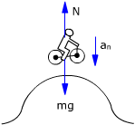
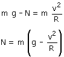
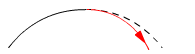

 |
 |
Observa hay valores de v que hacen la normal negativa. Una normal negativa indica una situación que no puede darse: con esa velocidad la moto no podrá recorrer una circunferencia de radio R
El menor valor posible para la normal es 0 que corresponde al caso en que la moto recorre el montículo sin tocarlo sometida solo a la acción del peso. La velocidad correspondiente a esta situación se deno-mina 'velocidad crítica' (vc).

Si la moto, sometida solo a su peso, tuviera una velocidad diferente de la crítica describiría una curva de radio diferente a R:
|
 |
Sometida solamente al peso, la moto describiría una curva de radio menor que R atravesando la superficie. La normal evita esto empujando a la moto para que ésta recorra el montículo |